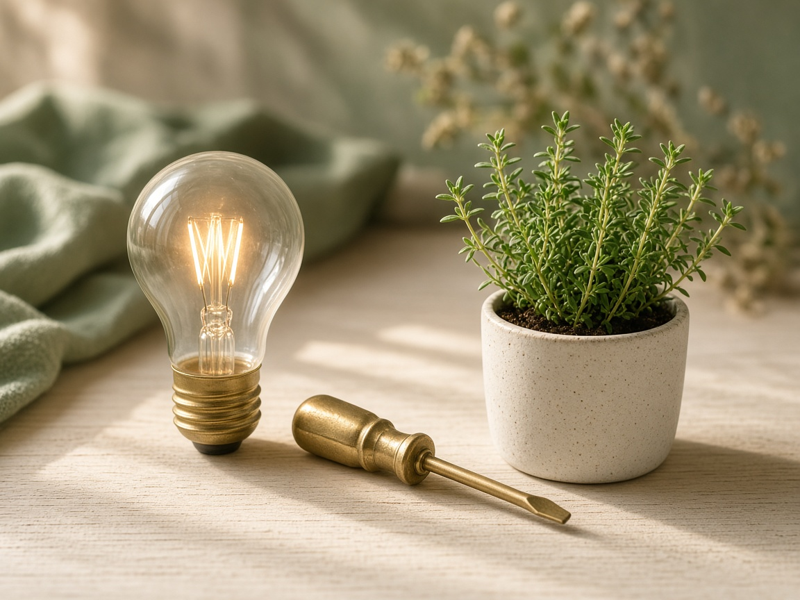
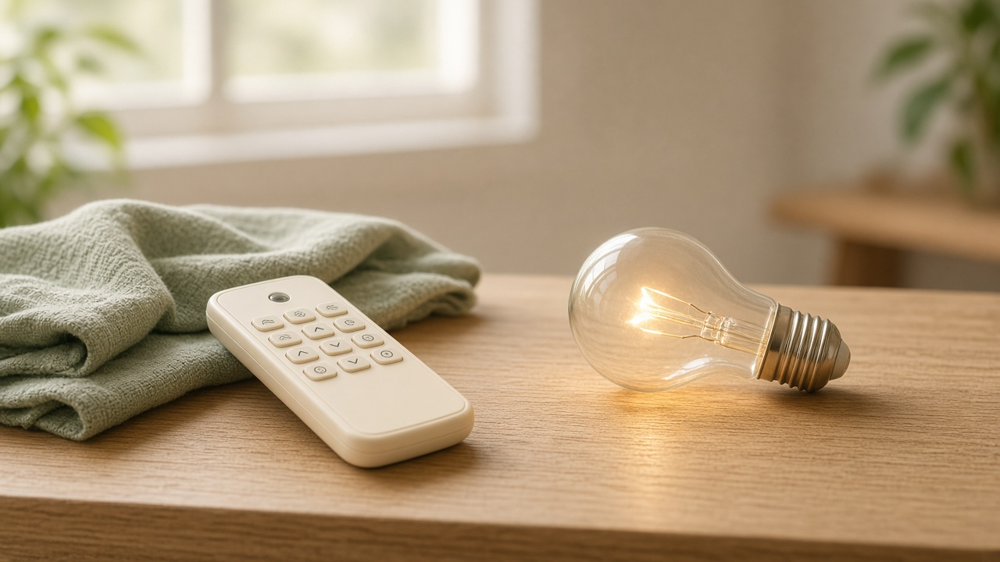

01
Logistik & bungkusan
Jejak parcel masuk, siapa yang ambil, dan apa yang belum dibuka. Tiada lagi “barang tu sampai ke?”
HomeOS · Malaysia
Sistem operasi pertama Malaysia yang menghapuskan beban mental ibu bapa. Urus logistik keluarga, gamifikasi tugasan anak-anak, dan jejaki kewangan rumah dalam satu papan pemuka pintar.
Tentang sistem
Beban mental rumahtangga jarang kelihatan pada kalendar, tetapi ia sentiasa duduk pada seorang sahaja. NadiRumah mengangkat ingatan itu daripada kepala seseorang, lalu meletakkannya pada satu sistem yang seluruh rumah boleh sentuh.
Bukan aplikasi kalendar. Ia nadi yang memegang rumah supaya anda tidak perlu.
Modul sistem
Sembilan ruang yang biasanya berserak dalam chat keluarga, nota telefon, dan kepala ibu — kini satu papan.
Jejak parcel masuk, siapa yang ambil, dan apa yang belum dibuka. Tiada lagi “barang tu sampai ke?”

Aduan paip, lampu, dan baiki penghawa dingin jadi tiket, bukan mesej yang tenggelam.

Kerja rumah anak-anak jadi mata, ganjaran, dan tabiat. Adil untuk semua, kelihatan untuk ibu bapa.
Arkib stok dapur. Sistem nampak apa yang hampir habis sebelum ia benar-benar habis.

Rekod perubatan kecemasan dan jadual sekolah duduk di hujung jari, bukan dalam laci.
Utiliti, cukai tanah, dan liabiliti rumah dalam satu garis masa. Jumlah kos rumah jadi telus.

Nampak corak rumah, cadang belian, dan ingatkan jadual yang bertindih sebelum ia jadi masalah.

Gambar dan video keluarga dalam satu tempat. Apabila iPad dibiarkan, ia menjadi bingkai rumah.

Pantau Wi-Fi rumah, kemudian hidup atau matikan penghawa dingin, lampu, mesin basuh, peti ais, dan peranti lain.
Kelebihan
Satu sumber benar. Semua orang nampak status yang sama, pada masa yang sama.
Alahan, klinik, dan hubungan waris tidak lagi bergantung pada ingatan seorang.
Tugasan selesai kelihatan. Mata terkumpul. Tabiat dibina tanpa ceramah setiap malam.
Jumlah pemilikan rumah — bil, senggaraan, cukai — berhenti menjadi kejutan.
Onboarding
Seorang dewasa membuka rumah digital dan memegang kunci keluarga.
Pasangan dan anak-anak dapat ruang sendiri, dengan kebenaran yang sesuai umur.
Tablet atau iPad di dapur menjadi papan yang seluruh rumah laluinya.
Parcel, tugasan, dapur, dan bil bergerak tanpa anda menjadi satu-satunya ingatan.
Automasi
Bukan chatbot yang mengarah rumah anda. Ia pemerhati yang senyap: nampak corak, cadang langkah, dan ingat tarikh yang manusia selalu tertinggal.
Analisis ramalan: beras dan susu dijangka habis sebelum hujung minggu. Senarai belian sudah disusun.
Cadangan penyelarasan: latihan Aisyah bertindih dengan servis penghawa dingin. Alih slot atau tukar tarikh teknisi?
Peringatan tempatan: bil TNB dan cukai tanah masuk kalendar sebelum tarikh akhir, bukan selepas notis denda.
Harga & pelan
Mula dengan asas keluarga. Naik taraf apabila rumah perlukan awan masa nyata dan sandaran tanpa had.
Asas keluarga
Premium
Jimatan dua bulan pada bil tahunan.
Pengguna terawal
Dulu semua ingatan duduk pada saya. Sekarang anak tanya papan, bukan tanya emak. Malam jadi lebih sunyi — dalam cara yang baik.
Cukai tanah dan TNB duduk pada garis masa yang sama dengan jadual sekolah.
Gamifikasi tugasan menukar peringatan malam menjadi permainan yang mereka sendiri mahu menang.
Soalan lazim
Rekod kesihatan, kewangan, dan profil kanak-kanak disimpan berasingan daripada kandungan pemasaran. Akses ahli dikawal oleh akaun induk. Pelan Premium menambah sandaran sulit di awan. Kami tidak menjual data keluarga.
Ya. NadiRumah dibina sebagai PWA. iPad dan tablet Android yang masih membuka pelayar moden boleh menjadi skrin dinding — tanpa aplikasi kedai yang berat.
Tidak. Rumah tidak perlu suis pintar atau sensor untuk mula. Modul logistik, tugasan, dapur, dan bil berfungsi dengan input keluarga. Peranti IoT boleh datang kemudian, bukan sebagai syarat.
Pelan percuma memuatkan empat profil. Pelan Premium membuka profil tanpa had — sesuai untuk rumah pelbagai generasi dan penjaga yang datang pergi.
Boleh. Naik taraf dan turun taraf tidak mengunci data asas keluarga anda. Eksport rekod kekal milik rumah, bukan milik langganan.
Mula hari ini
Jangan biarkan urusan rumahtangga menjejaskan masa berkualiti keluarga anda. Jadikan NadiRumah sebagai nadi penggerak kediaman anda bermula hari ini.